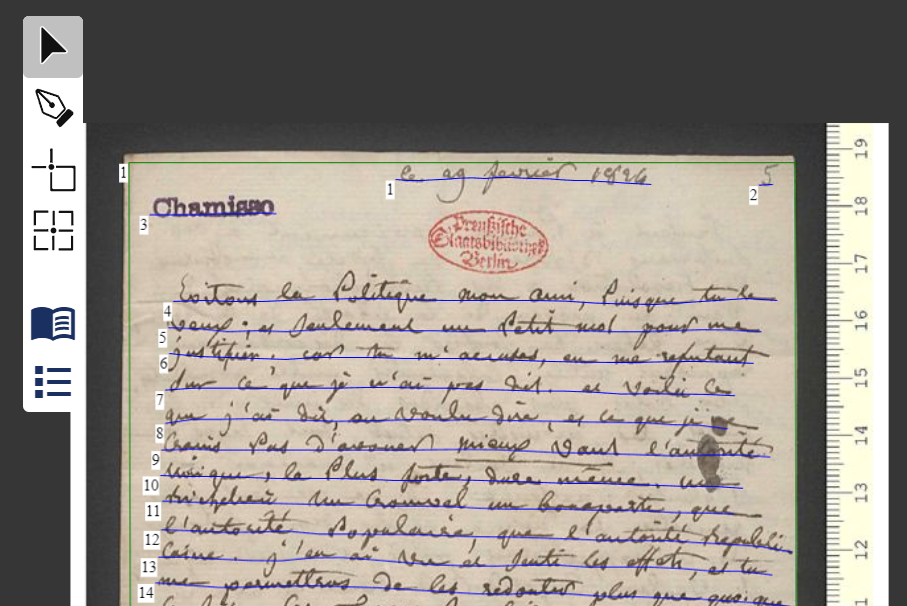
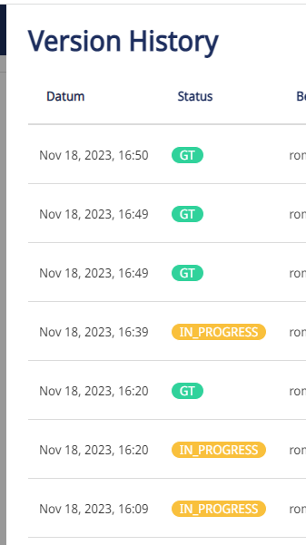
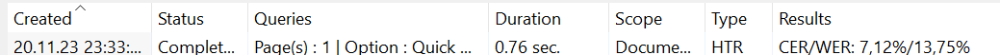
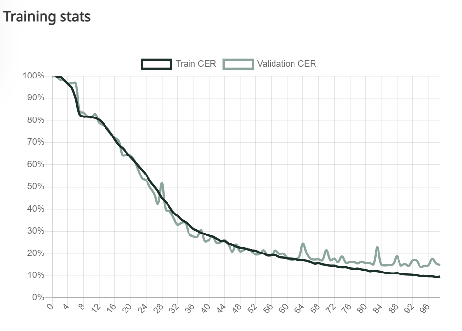

<!doctype html>
<html lang="de">
  <head>
    <meta charset="utf-8">

		<title>Stabi Tool Tuesday</title>

		<meta name="description" content="A colaborative learning space for all things DH">
		<meta name="author" content="Roman Kuhn">

		<meta name="apple-mobile-web-app-capable" content="yes">
		<meta name="apple-mobile-web-app-status-bar-style" content="black-translucent">

		<meta name="viewport" content="width=device-width, initial-scale=1.0, maximum-scale=1.0, user-scalable=no, minimal-ui">

    <link rel="stylesheet" href="dist/reveal.css">
    <link rel="stylesheet" href="dist/theme/white.css">
  </head>
  <body>
    <div class="reveal">
      <div class="slides">
         <section data-markdown data-separator="^\n---\n" data-separator-vertical="^\n--\n" data-separator-vertical="^\n--\n" data-charset="utf-8">
          <script type="text/template">
          <!--content goes here-->

          ## Stabi Tool Tuesday
          ### 3 - OCR/HTR <!-- .element: class="fragment" -->
          21.11.2023

          ---
          ### Tool Tuesday
          Ein kollaborativer Raum, um DH-Methoden und tools zu diskutieren... auszuprobieren... zu experimentieren...

          ...manchmal auch zu scheitern?

          --
          ### no code
          (für den Moment jedenfalls)

          --
          Folien und weitere Materialien finden sich hier: https://github.com/r0man-ist/tooltuesday

          Die heutigen Folien hier: https://r0man-ist.github.io/tooltuesday/slides/OCR-HTR.html

          Kontakt: roman.kuhn@sbb.spk-berlin.de

---
### Überblick über die Reihe
jeden zweiten Dienstag

im Moment sechs Termine fest geplant:
* Datenquellen und Schnittstellen
* Datenstrukturierung mit OpenRefine
* **OCR/HTR**
* Named Entity Recognition (NER)
* Netzwerkvisualierung (Gephi)
* Topic Modeling


--
Orientiert an einer (prototypischen) DH-'pipeline'

Forschungsidee/Forschungsfrage

&#8618; Daten suchen (und finden); Daten generieren

&#8618; Daten aufbereiten

&#8618; Daten auswerten, transformieren

&#8618; Ergebnisse (und neue Daten) publizieren/visualisieren

--
Weitere Termine/Themen bei Bedarf

Bring your own data


---
### OCR/HTR

Optical Charakter Recognition

Handwritten Text Recognition

### Transkribus
Webapp: https://lite.transkribus.eu/

Installation: https://readcoop.eu/de/transkribus/download/

---

## Alternativen

- [eScriptorium](https://escripta.hypotheses.org/)

     - [Instanz der UB Mannheim](https://ocr-bw.bib.uni-mannheim.de/escriptorium/)

     - Sprechstunde: https://ocr-bw.bib.uni-mannheim.de/category/news/

     - [Anleitung für lokale Installation](https://ocr-bw.bib.uni-mannheim.de/wp-content/uploads/2022/03/Lokale_Installation_eScriptorium.pdf)
- [OCR4all](https://www.ocr4all.org/)

---

## Import

[Beispiel: Brief von Hippolyte de Chamisso an Adelbert von Chamisso](https://digital.staatsbibliothek-berlin.de/werkansicht?PPN=PPN73975503X&PHYSID=PHYS_0001&view=picture-download)

[PDF](https://github.com/r0man-ist/tooltuesday/blob/main/PPN73975503X.pdf)

--

Web-App: Import aus jpg oder PDF

Expert Client: Import auch aus IIIF Manifest, Ordner, etc.

---

## Segmentierung



--

## Erkennung

Modelle

Tags

Struktur-tags

Text-tags

--

## Versionsverlauf




---

## Ergebnisse beurteilen

CER/WER im Expert Client berechnen




---

## Modelltraining




---

## Export und Exportformate

Web-App: XML (Page, Alto), PDF, DOCX

Client: Auch TEI (via XSLT), Excel, TXT


---

### Tabellen und Formulare


</section>
         
        </script>
        
      </div></div></body>
    </div>
    <script src="raphael-min.js"><
      <script src="flowchart-latest.js"></script>
    <script src="dist/reveal.js"></script>
    <script src="plugin/markdown/markdown.js"></script>
    
    <script>
      Reveal.initialize({
    plugins: [ RevealMarkdown ]
  });
    </script>
  </body>
</html>